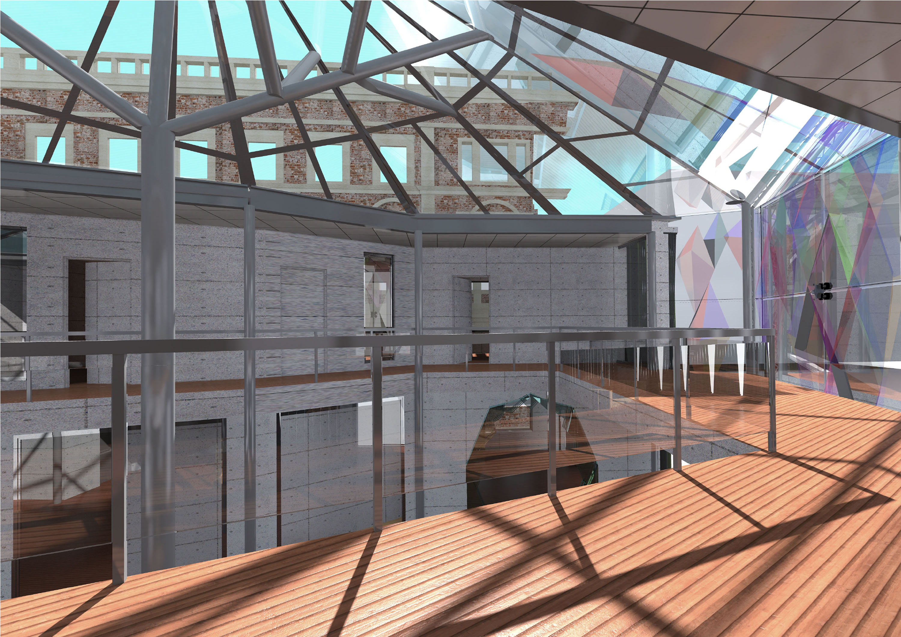
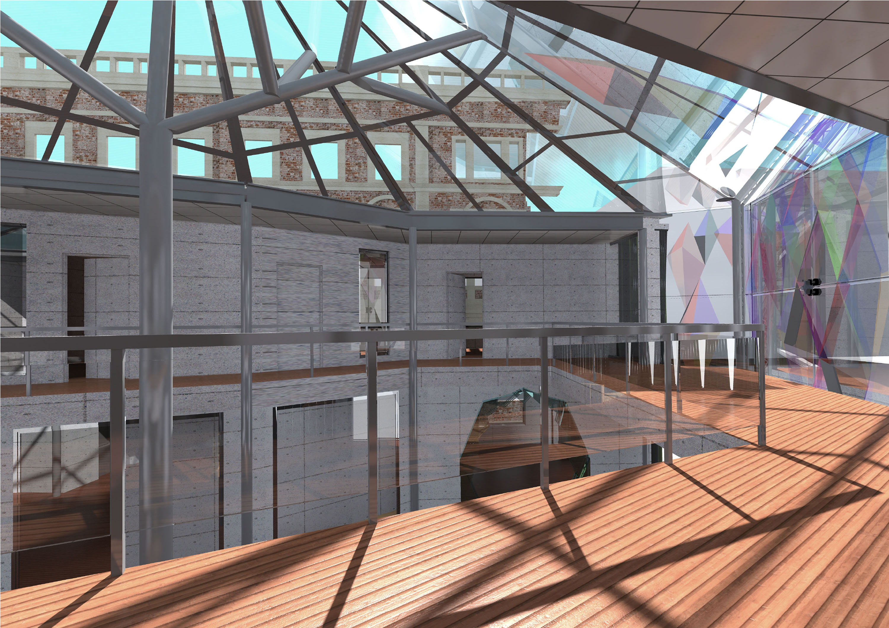

The Crystal
Following the earthquakes, the goal of this project is to redevelop Christchurch's high street and re-welcome people to the city. The concept and idea for this project arose from the old remaining façade on site and the Christchurch cathedral that was lost in the quake. A new concept of old and new was devised to celebrate the beauty of the old brick structure by framing it from the inside to mimic a beautiful painting.
The building is divided into two parts, with the ground floor housing the retail store and cafeteria, and the first floor used for office spaces. An abstract crystal-like roof structure covers the building, evoking the old stained-glass windows of the cathedral. As the sun shines onto the transparent roof structure below, the stained glass with its different colours appears to glisten and dance, forming colourful patterns beneath.
 
